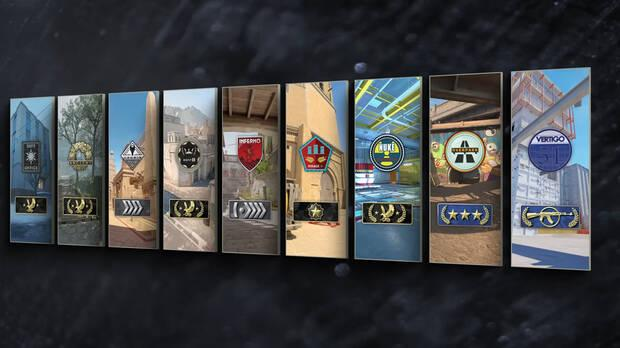

‘Counter Strike’ es una de las series de videojuegos más conocidas de todos los tiempos, un emblema del género shooter. Lanzada originalmente en 1999, ha sobrevivido hasta estos tiempos con la aparición de nuevas versiones. ‘Counter Strike: Global Offensive’, no obstante, llevaba entre nosotros más de una década. Ahora, por fin, ha llegado el esperadísimo 'Counter Strike 2’.
Esta última versión se presenta para sustituir a ‘Counter Strike: Global Offensive’. Lo hace manteniendo toda la esencia del clásico, pero incorporando una serie de novedades que prometen darle vigencia por otro lapso de tiempo. Entre lo más destacado encontramos la presencia del motor gráfico Source 2 desarrollado por Valve que permitirá dar un importante salto a nivel de efectos.


De entrada vamos a repasar los 7 mapas disponibles en modo competitivo Premiere, el referente dentro de Counter Strike 2 con un nuevo sistema de clasificacion. Todos estos mapas son de ataque o defensa de bomba y podemos encontrar los siguientes:
Por otro lado tenemos otros tres mapas extras presentes en diferentes modos de juego y experiencias dentro de Counter Strike 2 ajenas al modo Premiere. Aqui nos encontramos con el emblematico Dust 2 que lleva ya un tiempo fuera del map pool competitivo, asi como otros dos mapas de rescate de rehenes más que conocidos por los veteranos del Counter-Strike:
A diferencia de otras ediciones, ahora las armas se dividen en cinco categorias diferentes: Accesorios, pistolasm, armas de nivel medio, rifles y utilidades. Los accesorios y las utilidades son comunes y no son seleccionables pero lo que si podemos hacer es elegir hasta 5 armas de las otras tres cartegorias con total libertad.

Esta eleccion se realiza desde el menu de Articulos Equipados del juego y las armas elegidas son las que luego podremos comprar durante nuestras partidas. Es decir, que, por ejemplo, podremos elegir 5 de los 7 rifles disponibles para que podamos comprarlos durante las partidas, si queremos cambiar esta seleccion deberemos hacerlo cuando no estemos jugando. A continuacion las teneis en funcion de su categoria:
No podemos elegir los accesorios, son comunes para todos los jugadores y entre ellos estan los elementos de proteccion, el tase y el kit para desactivar la bomba:
Las pistolas son un tipo de arma clave en CS2. De entrada todas las rondas comenzaremos con la denominada como pistola basica de nuestro bando de forma gratuita. Ademas, tambien hay modelos exclusivos de terrorista y antiterrorista y en todas las rondas siempre podremos tener una pistola y un arma principal sin importar el tipo de esta ultima.
En cuanto a nuestro tier list con las mejores pistolas de CS2, actualmente es el siguiente:
Entre las armas de nivel medio encontramos escopetas, SMG Y MG, es decir, armas habitualmente destinadas a un alcance corto y medio que no suelen ser tan efectivas como los rifles pero que son muy utiles durante las primeras rondas o en situaciones economicas desfavorables.
A continuacion la tier list de esta categoria de armas:
Los rifles son las armas mas poderosas de Counter-Strike 2. Aqui encontramos la emblematica AK-47, AWP o las M4 tan conocidas fuera del juego como dentro del mismo.
A continuacion la tier list de esta categoria de armas:
Las utilidades tambien son comunes para todos los jugadores y son las granadas disponibles en CS2 y realmente utiles para cegar al adversario, confundirlo, darnos cobertura, engañarlo o dañarlo. Son las siguientes:
Por otro lado tenemos el sistema competitivo "clasico" ese cib el que se inicio CS:GO. Aqui se elige el mapa o los mapas a los que queremos juganr antes de comenzar a buscar partida. Dentro de este modo se conserva el sistema de rangos antiguos de CS:GO pero esta vez, en lugar de tener un rango general, nuestro rango se calcula por cada mapa de forma individual, es decir, que podemos ser Nova en Anubis y Master Guardian en Mirage, por tener un ejemplo. Se hizo para evitar que los que solo juegan a un mapa y se lo conocen perfectamente, tengan un rango artificial en el resto
Muchos ya lo sabreis, pero a continuacion teneis todos los rangos para el modo competitivo clasico aplicados por mapa y ordenados de menor a mayor:
¡Siguenos en nuestras redes sociales! Instagram Twitter Facebook Mapa Web Contactanos